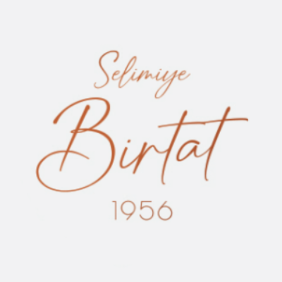

Selimiye Birtat Yaz Tarifesi Belli Oldu
Herkesin Merakla beklediği yaz fix menüsü işte bunlar



Tüm Türkiyenin severek gelip yediği Bayıldı Mekan Olan Aspolya Lokum Ciğerlerine İlgi Çok Arttı !
Mezeler, Türk mutfağının zenginliğini ve çeşitliliğini en iyi yansıtan unsurlardan biridir. Sofralarımızı süsleyen bu lezzetler, hem aperitif olarak tüketilir hem de ana yemek öncesinde misafirlerle paylaşılır. Farklı malzemeler ve hazırlanış yöntemleri ile hazırlanan mezeler, her kültüre ve tarife göre değişiklik gösterir. Mezelerin Tarihçesi Mezelerin kökeni oldukça eski zamanlara dayanır. İlk Mezopotamya ve Akdeniz bölgelerinde ortaya çıkan meze uygulaması, zamanla Osmanlı İmparatorluğu’nun etkisiyle Türk mutfağının ayrılmaz bir parçası haline gelmiştir. Mezeler, aynı zamanda misafirperverliğin bir simgesidir; sofra etrafında toplanan misafirler için en güzel şekilde hazırlanır ve sunulur. Popüler Mezeler Türk mutfağında birçok farklı meze türü bulunmaktadır. Bunlardan bazıları şunlardır: Haydari: Yoğurt, sarımsak ve dereotu ile yapılan hafif ve ferahlatıcı bir mezedir. Muhammara: Kırmızı biber ve cevizle hazırlanan, hafif acı ve tatlı lezzetiyle dikkat çeken bir mezedir. Zeytinyağlı Enginar: Zeytinyağı ve limon ile hazırlanan, vitamin açısından zengin bir mezedir. Acılı Ezme: Domates, biber, soğan ve baharatlarla yapılan, acılı ve lezzetli bir tariftir. İçli Köfte: Bulgur ve et ile hazırlanan, iç harcıyla bezenmiş bu lezzet, başlı başına bir meze olarak sofralarda yer alır. Mezelerin Hazırlanışı Mezelerin hazırlanışı genellikle basittir ama her birinin kendine özgü püf noktaları vardır. Örneğin, haydari yaparken yoğurdun süzülmesi ve taze otların kullanılması lezzeti artırır. Acılı ezme yaparken taze malzemelerin ince ince doğranması ve dinlendirilmesi, lezzetlerin birleşmesini sağlar. Mezelerle Sofra Kurmak Mezelerinizi sunarken şık tabaklar ve renkli sunumlar tercih edebilirsiniz. Mezeleri, yanında taze ekmek, zeytin ve turşularla birlikte servis etmek, sofranızı zenginleştirir. Ayrıca, soğuk mezelerin yanında beyaz şarap veya rakı gibi içecekler tercih edilerek özel bir ambiyans yaratılabilir. Sonuç Mezeler, sadece birer aperitif değil, aynı zamanda dostlukları pekiştiren ve sohbetleri canlandıran lezzetlerdir. Her meze, farklı kültürlerin ve geleneklerin bir yansımasıdır. Sofralarınızı mezelerle gönlünüzce süsleyin ve sevdiklerinizle paylaşmanın tadını çıkarın!

Şarap, binlerce yıllık tarihi ve zengin kültürel mirası ile dünyanın en eski içeceklerinden biridir. Sanat, edebiyat ve gastronomi ile iç içe geçmiş olan şarap, sadece bir içecek değil, aynı zamanda insan ilişkilerini güçlendiren bir kültür ürünüdür. Bu yazıda, şarap hakkında bilgilere, üretim süreçlerine ve şarap seçiminde dikkat edilmesi gereken noktalara yer vereceğiz. Şarap Tarihi Şarap üretiminin tarihi, antik uygarlıklara kadar uzanır. İlk şarapların M.Ö. 6000-5000 yılları arasında Gürcistan ve Mezopotamya’da yapıldığına dair kanıtlar bulunmaktadır. Sümerler, Mısırlılar ve Persler gibi medeniyetler, şarabı dini ritüellerde, ziyafetlerde ve günlük yaşamlarında önemli bir yere koymuşlardır. Zamanla, Roma İmparatorluğu döneminde şarap üretimi ve tüketimi yaygınlaşarak Avrupa'nın birçok yerine yayılmıştır. Şarap Üretimi Şarap yapım süreci genellikle aşağıdaki aşamalardan oluşur: Üzüm Seçimi: Şarap yapımında kullanılan üzüm çeşitleri, şarabın karakterini belirleyen en önemli unsurlardan biridir. Merlot, Cabernet Sauvignon, Chardonnay gibi farklı üzüm çeşitleri, farklı tat ve aromalar sunar. Fermentasyon: Üzümler ezilip suyu çıkarıldıktan sonra, şekerin alkol ve karbondioksite dönüşmesi için maya eklenir. Bu süreç, şarabın alkol oranını ve tadını belirler. Olgunlaşma: Fermente edilen şarap, genellikle meşe fıçılarda veya çelik tanklarda olgunlaştırılır. Bu aşamada şarap, farklı tat ve aroma bileşenleri kazanır. Şişeleme: Olgunlaşma sürecini tamamlayan şarap, şişelere doldurulur. Bu aşamada, şarap genellikle bir kaç ay daha dinlendirilir. Şarap Seçerken Dikkat Edilmesi Gerekenler Gözlem: Şarap kadehini hafifçe çevirerek rengi ve viskozitesini inceleyin. Kaliteli şaraplar genellikle berrak ve canlı renkte olurlar. Koklama: Şarabı koklayarak, aromalarını anlamaya çalışın. Farklı meyve, baharat ve çiçek notaları hissetmek mümkündür. Tatma: Şarabı ağzınıza alarak, damağınızda nasıl bir his uyandırdığını değerlendirin. Asidite, tatlılık ve gövde dengesi, iyi bir şarap için önemli kriterlerdir. Şarap ve Yemek Eşleştirmesi Şarap, yemeklerle mükemmel bir uyum sağlar. Genel bir kural olarak, kırmızı şaraplar et yemekleri ile, beyaz şaraplar ise balık veya sebze yemekleri ile eşleştirilir. Tabii ki, kişisel tat tercihleri de bu konuda önemlidir. Deneyerek kendi damak zevkinizi keşfedin! Sonuç Şarap, tarih boyunca insanları bir araya getiren, sohbetleri derinleştiren ve sofraları süsleyen bir içecektir. Her yudumda, tarih kokan bir lezzetin tadını çıkarırken, paylaşılan anların kıymetini bilin. Unutmayın, iyi bir şarap, iyi bir sohbetin en güzel eşlikçisidir!

Adana kebabı, adını Türkiye'nin güneyinde yer alan Adana şehrinden alan, kendine özgü lezzetiyle tüm dünyada tanınan bir yemektir. Kıyma, baharatlar ve özel yöntemlerle hazırlanan bu kebap, zengin aroması ve görselliği ile damakları şenlendiriyor. Tarihçesi Adana kebabının kökeni, kebap geleneğinin derinlerine kadar uzanır. Özellikle 19. yüzyılda, göçmenlerin ve yerel halkın birleşimiyle şekillenen Adana mutfağı, kebabının bu özgün versiyonunun ortaya çıkmasına zemin hazırlamıştır. Geleneksel olarak, kıyma, şişe geçirilir ve odun ateşinde pişirilir. Malzemeler Adana kebabının en belirgin özelliklerinden biri, kullanılan malzemelerin kalitesidir. Genellikle kuzu etinden yapılan kebap için, etin en az %20 yağ içermesi gerekmektedir. Bu, kebabın lezzetini artıran kritik bir unsurdur. Ayrıca, aşağıdaki malzemeler de kullanılır: Kuzu kıyması Kırmızı biber Soğan Kimyon Tuz Çeşniler (isteğe bağlı) Yapılışı Adana kebabını evde yapmanın yolu oldukça keyiflidir. İşte basit bir tarif: Kuzu etini ve yağı ince ince kıyın veya bir kıyma makinesinde çekin. Soğanı rendeleyin ve suyu sıkın. Tüm malzemeleri (et, soğan, baharatlar) bir kapta iyice yoğurun. Hazırladığınız karışımı şişlere geçirin ve şekil verin. Önceden ısıtılmış ızgarada veya mangalda pişirin. Servis Önerileri Adana kebabı genellikle lavaş ekmeği ve çeşitli mezelerle birlikte servis edilir. Yanında sumaklı soğan, yeşil biber ve domates ile güzel bir sunum elde edebilirsiniz. Ayrıca, ayran veya şalgam suyu gibi içecekler kebabın lezzetini tamamlar. Sonuç Adana kebabı, sadece bir yemek değil, aynı zamanda bir kültür ve gelenektir. Her lokmada, Adana'nın tarihini ve misafirperverliğini hissedersiniz. Eğer henüz tatmadıysanız, mutlaka denemenizi tavsiye ederim! Bu taslağı kendi tarzınıza göre düzenleyebilir veya geliştirebilirsiniz. Afiyet olsun!